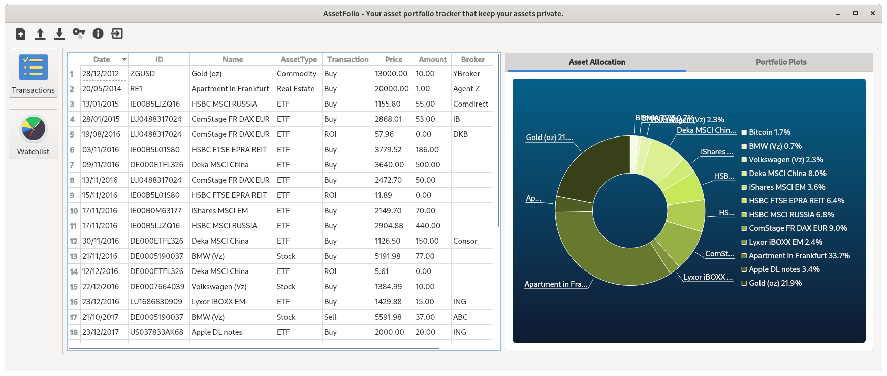

AssetFolio¶
An All-in-One Asset Tracker and Watchlist Application that keeps your asset data private.
Overview¶
AssetFolio is a multi-asset portfolio tracker that keeps our assets private. In the world of cloud technology, many data and information are shared and concentrate on the big technology companies, banks or the data trader companies. Their activities on how to share our data are not transparent. AssetFolio application helps us to keep our asset information private in our computer. It allows us to retrieve information online about the price changes without sharing our asset data.
Preview for the activity list using Qt5 and Qt5 pie chart:

Preview for the watchlist and asset tracker using WxWidget UI Library:
Installation¶
Software Dependencies:
- Qt5 or wxWidgetsfor the GUI
- RapidJSON (submodule)
- C++ Request (submodule) which depends on
libcurl - libxml2
Installing the dependency libraries:
-
Windows
- Install Git, MinGW w64, Qt5 and OpenSSl v1.1.1
- Clone vcpkg to C:/Libs/:
git clone https://github.com/microsoft/vcpkg.git - Build vcpkg by running
.\bootstrap-vcpkg.bat - Hook-up user-wide integration:
.\vcpkg integrate install - Install the library packages:
.\vcpkg install curl:x64-windows.\vcpkg install libxml2:x64-windows.\vcpkg install libssh2:x64-windows.\vcpkg install zlib:x64-windows
-
Ubuntu
sudo apt-get install build-essential checkinstall libssl-dev libcurl4-openssl-dev libxml2-dev libgtest-dev <libgtk-3-dev|qt5-default qtcreator> -
Fedora
sudo dnf install openssl-devel libcurl-devel libxml2-devel gtest-devel <wxGTK3-devel| qt5-qtbase qt5-qtbase-devel qt-creator>
Getting Started¶
Download the Source¶
-
Clone this repository:
git clone https://github.com/ywiyogo/AssetFolio.git -
Updating the submodules
git submodule update --init --recursive -
Clone the CPR library in the submodule folder:
cd submodules && git clone https://github.com/whoshuu/cpr.git.
Build and Start the Project¶
Currently, the project supports UNIX and Windows. It shall work also on MAC, however, I don't test it yet.
UNIX System¶
Got to the project folder and type these commands:
mkdir build && cd build
cmake ..
make
./AssetFolio
In order to create an AppImage of the AssetFolio, run these commands after make:
make install DESTDIR=AppDir
./createAppImage.sh
Windows System¶
Got to the project folder and type these commands:
mkdir build && cd build
cmake .. -G "MinGW MakeFiles"
make
.\bin\AssetFolio.exe
Note, change set(GUI "Qt") to set(GUI "Wx") to build the GUI with WxWidget.
An example dataset in data/example.json can be opened with the "arrow up" toolbar icon.
The C++ Request submodules include GTest to test its code. If we don't want to install GTest in our system, we can disable it in CMakeLists.txt set(USE_SYSTEM_GTEST OFF).